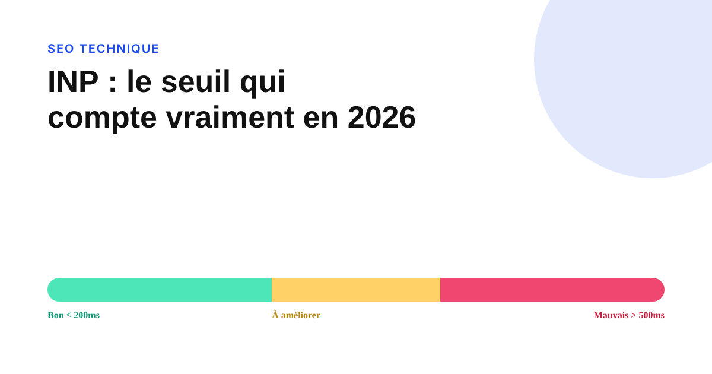

INP et Core Web Vitals : le seuil qui compte vraiment en 2026
Une rumeur circule sur les blogs SEO : un seuil INP abaissé à 150 ms depuis 2026. Elle ne figure dans aucune documentation Google. Voici ce qui est réellement documenté, et pourquoi ce genre de rumeur se propage si facilement.

Une affirmation revient régulièrement dans des articles SEO publiés en 2026 : Google aurait resserré le seuil « bon » de l'INP à 150 millisecondes, contre 200 ms auparavant. Le problème, c'est qu'aucune de ces publications ne cite la documentation officielle de Google à l'appui — et pour une bonne raison : elle ne le dit pas.
Ce que web.dev documente, sans ambiguïté
La documentation officielle de Google (web.dev) fixe le seuil « bon » de l'INP à 200 ms ou moins, « à améliorer » entre 200 et 500 ms, « mauvais » au-delà de 500 ms. Ce seuil est mesuré au 75e percentile des interactions enregistrées auprès de visiteurs réels — pas une moyenne, mais le point sous lequel se situent 75 % des interactions observées. Ces chiffres n'ont pas changé depuis l'introduction de l'INP comme Core Web Vital, en mars 2024.
D'où vient la confusion
Deux dynamiques alimentent ce genre de rumeur : la republication en chaîne d'un chiffre inventé par un premier article sans source, repris ensuite par d'autres sans vérification — un classique du contenu SEO généré en volume — et la confusion entre le seuil officiel et des recommandations internes plus strictes que certaines agences appliquent à leurs propres clients, pour viser une marge de sécurité. Ces recommandations peuvent être de bonnes pratiques, mais elles ne sont pas le seuil Google, et les présenter comme telles induit en erreur.
Les trois métriques qui comptent toujours
LCP (Largest Contentful Paint), INP et CLS (Cumulative Layout Shift) restent les trois Core Web Vitals actuelles. Aucune quatrième métrique n'a été ajoutée depuis le remplacement du FID par l'INP. Un site qui respecte les trois seuils « bon » documentés — LCP sous 2,5 secondes, INP sous 200 ms, CLS sous 0,1 — reste aligné avec les standards actuels de Google, sans qu'il soit nécessaire de courir après un seuil plus strict non confirmé.
Comment vérifier une affirmation de ce genre avant de la relayer
Face à un chiffre technique qui circule sans source, le réflexe le plus simple reste de remonter à la documentation officielle : la page web.dev/articles/inp pour les seuils INP, ou web.dev/articles/defining-core-web-vitals-thresholds pour la méthodologie de définition des seuils. Si l'affirmation n'y figure pas et qu'aucune annonce officielle de Google ne la confirme non plus, mieux vaut la traiter comme non vérifiée plutôt que de l'intégrer à un audit ou une recommandation client.
FAQ
Le seuil « bon » de l'INP a-t-il changé en 2026 ?
Non, pas selon la documentation officielle de Google (web.dev). Le seuil reste à 200 millisecondes ou moins pour « bon », au-delà de 500 ms pour « à améliorer », mesuré au 75e percentile des interactions des visiteurs réels. Des publications tierces évoquent un seuil abaissé à 150 ms sans citer de source primaire Google vérifiable — à ne pas prendre pour acquis.
Quelles sont les trois métriques Core Web Vitals actuelles ?
LCP (Largest Contentful Paint, le temps de chargement du plus grand élément visible), INP (Interaction to Next Paint, la réactivité aux interactions) et CLS (Cumulative Layout Shift, la stabilité visuelle). Aucune quatrième métrique Core Web Vital n'a été ajoutée depuis le remplacement de FID par INP en mars 2024.
Pourquoi l'INP a-t-il remplacé le FID en 2024 ?
Le FID ne mesurait que le délai avant la première interaction, ce qui laissait de côté les lenteurs ressenties sur les interactions suivantes. L'INP évalue la réactivité sur l'ensemble des interactions d'une visite, ce qui donne une mesure plus représentative de l'expérience réelle d'un visiteur.
Envie d'un audit technique fiable de vos Core Web Vitals ?
Pour aller plus loin, voir la page SEO, et l'article Les core updates Google de 2026.
Pour continuer sur ce sujet.